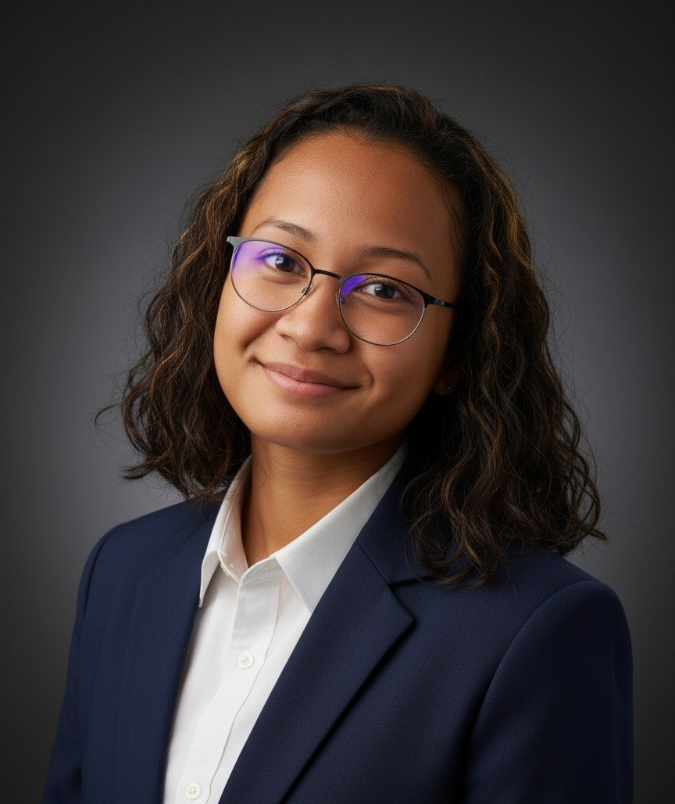
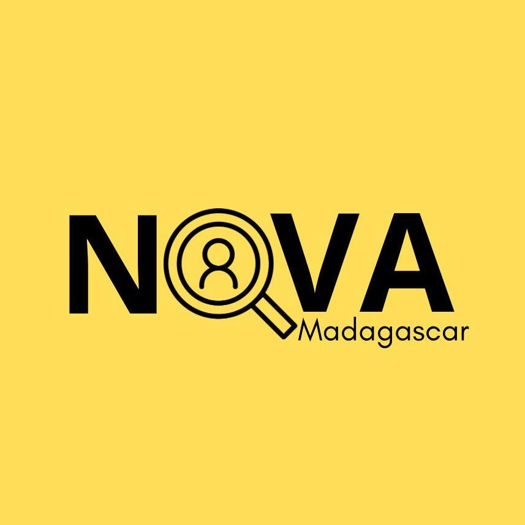
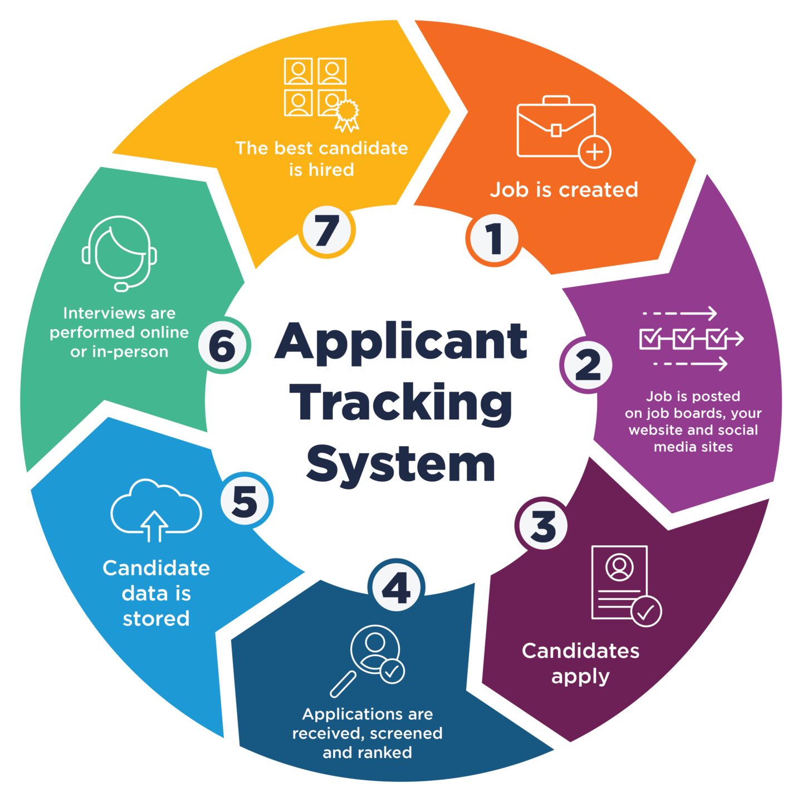
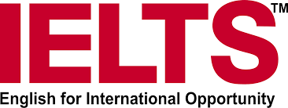

☀︎ Tojoniaina Andrianina

Bonjour, je suis Tojo 👋
Étudiante en Master 2 Humanités Numériques à l’Université des Mascareignes , Maurice.
Issue d’une formation en Ressources Humaines, je construis aujourd’hui mon parcours entre les RH, le numérique et l’analyse de données, avec une forte envie de comprendre et améliorer les pratiques professionnelles à travers les outils digitaux.
Je cherche à développer des projets concrets, utiles et ancrés dans la réalité du terrain, en combinant vision humaine et innovation technologique.
À propos
Mon parcours m’a permis de développer des compétences solides en gestion des ressources humaines, communication numérique, analyse de données et gestion de projets. J’ai toujours été intéressée par la manière dont les organisations fonctionnent et évoluent, notamment à travers les outils digitaux qui transforment aujourd’hui le recrutement et la gestion des talents.
Aujourd’hui, je cherche à aller plus loin en créant des projets concrets qui répondent à des besoins réels. Mon objectif est de relier la théorie apprise à l’université avec la pratique sur le terrain, notamment à Madagascar et dans la région de l’océan Indien.
CV
📄 Ouvrir mon CVProjets

Nova & Recrutement
Nova est un projet qui représente la création d’une agence de recrutement locale à Madagascar. L’objectif est de rapprocher les jeunes talents des entreprises, tout en modernisant les pratiques RH. Ce projet me permet de construire une vision concrète du recrutement sur le terrain, en tenant compte des réalités locales, des besoins des entreprises et des attentes des candidats.

ATS System
Le projet ATS représente une idée d’évolution digitale pour mon agence de recrutement. Il s’agit d’un système permettant de gérer automatiquement les candidatures, trier les profils, suivre les recrutements et centraliser toutes les données RH. Ce projet reflète mon intérêt pour l’intelligence des données et l’optimisation des processus RH grâce au numérique.

IELTS
La préparation à l’IELTS est un objectif important dans mon parcours. Elle représente une volonté de progresser en anglais afin d’évoluer dans un contexte international. C’est un travail constant qui demande discipline, rigueur et motivation, mais qui est essentiel pour mes ambitions académiques et professionnelles.

DELF C2
Le DELF C2 est un objectif exigeant qui reflète ma volonté de perfectionner mon niveau en français. Il me permettrait de renforcer mes compétences en expression écrite et orale, et d’évoluer dans des environnements académiques et professionnels de haut niveau.

Formation & Développement
Je poursuis différentes formations complémentaires en droit du travail à Madagascar, en outils numériques et en analyse de données appliquées aux ressources humaines. L’objectif est de renforcer mes compétences pratiques afin de mieux comprendre et encadrer les réalités du monde professionnel.
Contactez-moi 📩
Si vous souhaitez collaborer, proposer un projet ou simplement échanger, vous pouvez me contacter directement.